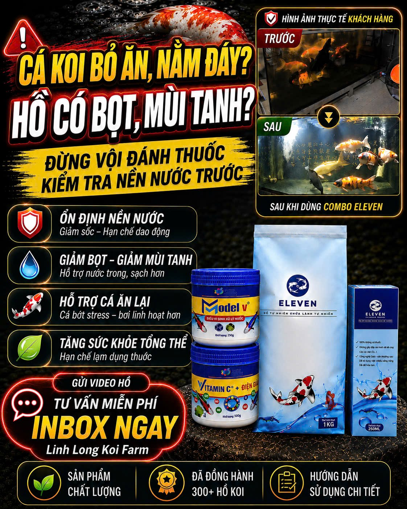

Anh em có đang gặp cảnh này?
- 💧 "Nước không được trong lắm", "đục có mùi tanh sau thay nước" — nhìn hồ mà bực.
- 🫧 "Bể có ít bọt lâu tan, cho cá ăn là hết" — mặt hồ nổi bọt dai, dậy mùi.
- 🐟 Cá bơi yếu, tụ góc, bỏ ăn, da nhạt màu; có con thối đuôi, điểm đen.
- 🧪 Đã thay nước, ngâm muối, bôi tím… mà làm mãi vẫn không dứt.
- ❓ Không biết liều đúng cho hồ mấy khối của mình.
Phần lớn những cảnh này quy về một gốc: nền nước bị "sập vi sinh" — vi sinh yếu không xử lý được phân & khí độc. Vấn đề không ở thuốc, mà ở nền nước.
Hình thật khách hàng — trước & sau

Sửa từ gốc: nuôi lại NỀN NƯỚC
Nuôi Koi không phải đợi cá bệnh rồi mới cuống cuồng đánh thuốc. Đánh thuốc chỉ dập ngọn. Giữ nền nước ổn định — vi sinh khỏe, đủ khoáng, pH không nhảy — thì cá ít stress, ít đổ bệnh, lên màu từ gốc. Giữ nền nước ổn, cá khỏe, người nuôi bình an mỗi ngày.
Bộ ELEVEN — 4 món phối nhau
Vi sinh
Xử lý gốc khí độc (NH₃/NO₂/H₂S), giảm phân & thức ăn thừa, giảm mùi tanh — nước trong. Quy cách: dùng cho ~200 khối nước.Khoáng nước Liquamin
Bù khoáng cho cột nước → da bóng, màu tươi, form & vảy khỏe. Bổ sung khoáng cho nước máy/nước thiếu khoáng.Khoáng bùn Mineral+ (ELEVEN)
Ổn định tầng đáy & pH, nuôi hệ vi sinh khỏe. Quy cách: dùng cho ~100–150 khối nước.Vitamin C
Giảm stress, tăng đề kháng — nhất là sau mưa, giao mùa, vận chuyển. Quy cách: dùng ~50 khối nước / 100kg cám.Nói thật: khoáng & Vitamin C là hỗ trợ — vi sinh mới xử lý gốc. Mình không bán kiểu thổi phồng.
Cách dùng — đơn giản tại nhà
Nhận hàng nhắn Zalo — mình hỏi hồ mấy khối rồi chỉ liều riêng cho đúng hồ của anh em.
Người đứng sau bộ ELEVEN

Mình là Đỗ Thanh Long, chủ Linh Long Koi Farm (Gia Kiệm – Đồng Nai). Hơn 7 năm theo nghề Koi Nhật, đã đến tận 8 nhà vườn Koi ở Nhật, nhập hơn 1 tỷ tiền cá, đang chăm hơn 100 chú Koi.
Bộ ELEVEN chính là quy trình chăm nước mình đang dùng cho cá của trại — cá khỏe thật, lên giải thật:
Khách đã dùng nói gì
"Sản phẩm tốt. Hồ ổn định dù mưa to liên tục mấy hôm vẫn ok."
— Anh Đức"Hết khoáng là nhắn đặt tiếp."
Khách Hà Nội mua lại lần 2 trong tháng.
"Nuôi xuất sắc anh."
Khách đã chuyển đổi & đặt hàng.
"Cảm ơn nhiều, mong sao có hiệu quả."
Khách Biên Hòa, được tư vấn liều theo hồ.
Trích từ tin nhắn khách trên Page Linh Long Koi Farm (tên rút gọn). Nhiều khách mua lại lần 2, lần 3 khi hết khoáng.
Giá & ưu đãi
Mình cam kết với anh em
- ✅ Tư vấn 1-1 theo đúng hồ trước khi anh em chốt — không ép mua.
- ✅ Đồng hành sau bán: nhận hàng nhắn lại, mình hướng dẫn dùng đúng từng bước.
- ✅ Nói thật: hồ đang ổn thì mình nói thẳng chưa cần mua thêm. Cá là sinh thể sống — mình không hứa khỏi 100%, chỉ cam kết làm thật, nói thật.
Cách đặt — 2 bước gọn
Bước 1 — Chuyển khoản đặt combo:
Chủ TK: ĐỖ THANH LONG
Số TK: 6668666789789
Nội dung: Tên + SĐT + "Combo Koi"

Quét là ra sẵn 1.000.000đ + nội dung "Combo Koi".
Bước 2 — Nhắn Zalo để mình hỏi hồ & chỉ liều riêng:
💬 Nhắn Zalo 0979943026